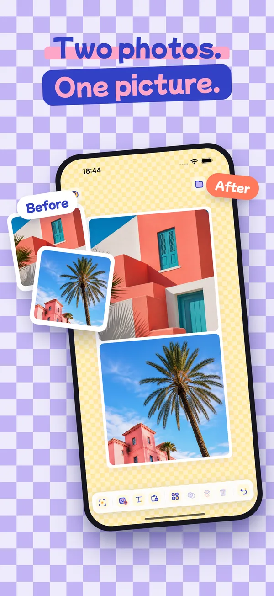
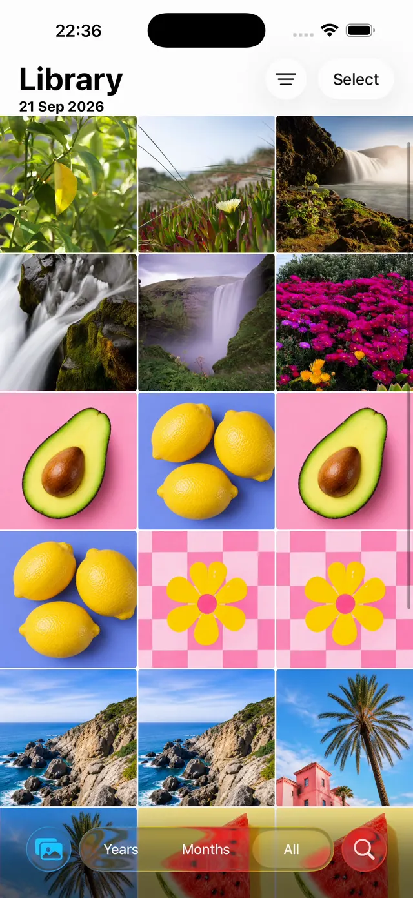
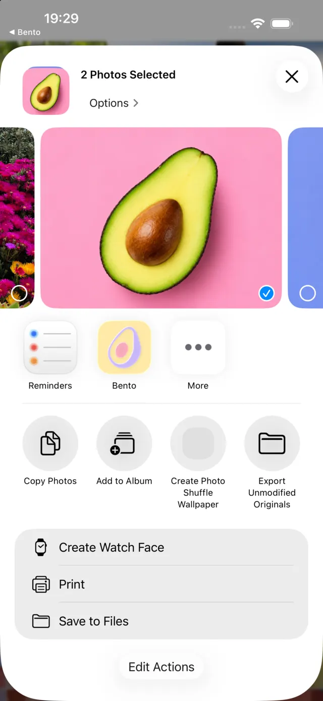
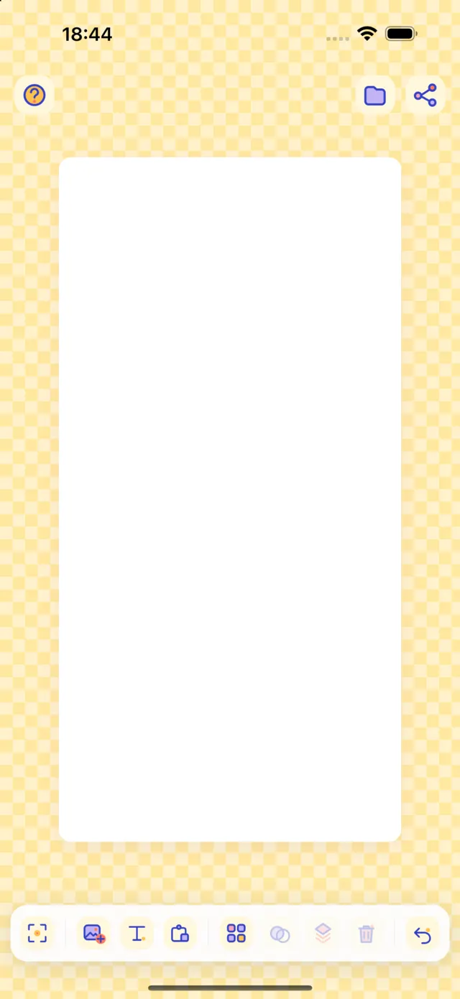
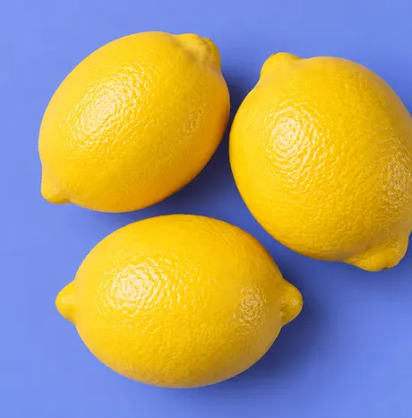
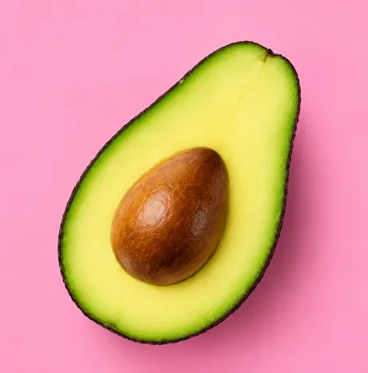
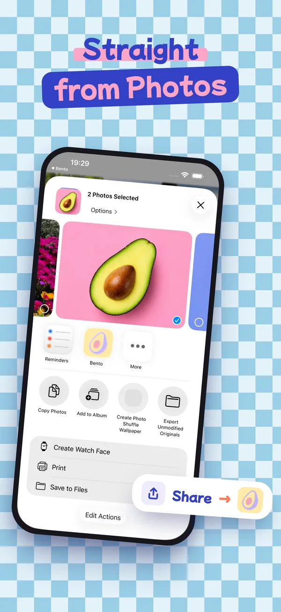
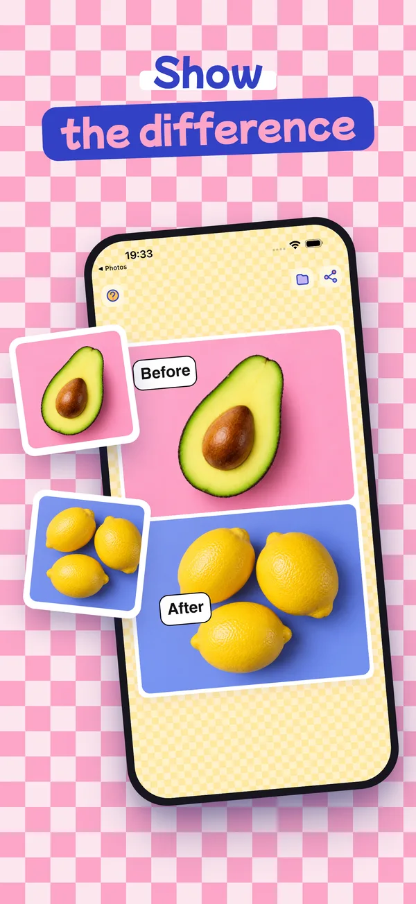
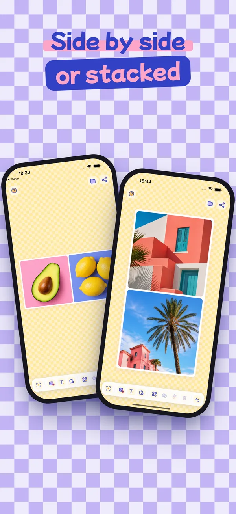
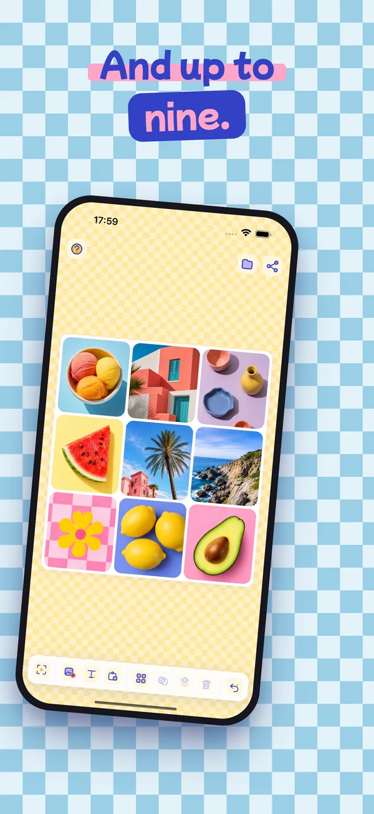

Bento Board
The photo collage maker for iPhone and iPad.
Pick a few photos in your library, tap Share, choose Bento: the board opens with your pictures already in place. Arrange them in a clean grid, side by side, before and after, or wherever you like.
Download on theApp Store- Free
- No account
- No ads
- iPhone & iPad

How it works, from Photos
- Select your photosIn the Photos app, tap Select and pick two or more.
- Tap Share, then BentoBento Board sits in the share sheet with your other apps.
- Your board is readyThe photos land in their cells, ready to arrange and export.





Makimono: stitch screenshots into one long image
A long conversation, a recipe, a receipt that won't fit on the screen? Take a few screenshots as you scroll, share them to Bento together and choose Makimono. They are sewn into one tall image, as if you had captured the whole page in one go.
- Scroll a little between screenshots and keep part of the last one in view: that's where the seam goes.
- Two to four screenshots. The bars at the top and bottom are kept only once.
- Full resolution, however tall the page.
A makimono is a Japanese hand scroll, read by unrolling it.




Straight from Photos
Select several photos, tap Share, pick Bento. No importing one by one: they all land on the board.
Photo grid or freeform
Ten layouts from full bleed to 3×3, square, 4:5, 9:16 or 16:9 — or no grid at all.
Before and after photos
Before and after, side by side or stacked, with comic-style speech bubbles to say which is which.
Your hands do the work
Pinch to zoom inside a cell, drag to reframe, press and hold to swap photos between cells.
Full resolution
Export to your library or any app at full definition. Projects save themselves and wait for you.
Nothing leaves your phone
No account, no ads, no tracking, no network. Read the privacy policy.
What people make with Bento Board
Two photos side by side
Compare two outfits, two rooms, two dishes: one picture, ready to send.
Before and after
A renovation, a haircut, a garden, a tidy cupboard. Add speech bubbles to say which is which.
Listing photos
Show an item from every angle in a single image for your marketplace listing.
Long screenshots
A whole conversation, recipe or receipt as one tall image, with Makimono.
Questions
How do I put two photos side by side on iPhone?
In the Photos app, select the two photos, tap Share, then Bento. Pick the side-by-side layout and export the result to your library or any app.
How do I make a before and after photo on iPhone?
Share the before and after photos to Bento from the Photos app, choose side by side or stacked, and add speech bubbles to label them. Export at full resolution.
How do I turn several screenshots into one long screenshot?
Take two to four screenshots while scrolling, keeping part of the previous one on screen. Share them together to Bento and choose Makimono: they are stitched into one tall image.
How many photos can I put in one collage?
The free grid layouts hold 1 to 4 photos, in square, 4:5, 9:16 or 16:9. Bento Plus, a one-off purchase, adds the 6- and 9-photo grids. Freeform lets you place photos wherever you like.
Is Bento Board free?
Yes. Bento Board is free on the App Store, with no account and no ads. Bento Plus is an optional one-off purchase, never a subscription, that unlocks the 6- and 9-photo grids.
Does it work on iPad?
Yes, Bento Board works on iPhone and iPad.
Are my photos uploaded anywhere?
No. Bento Board has no network connection: your photos and projects stay on your device.